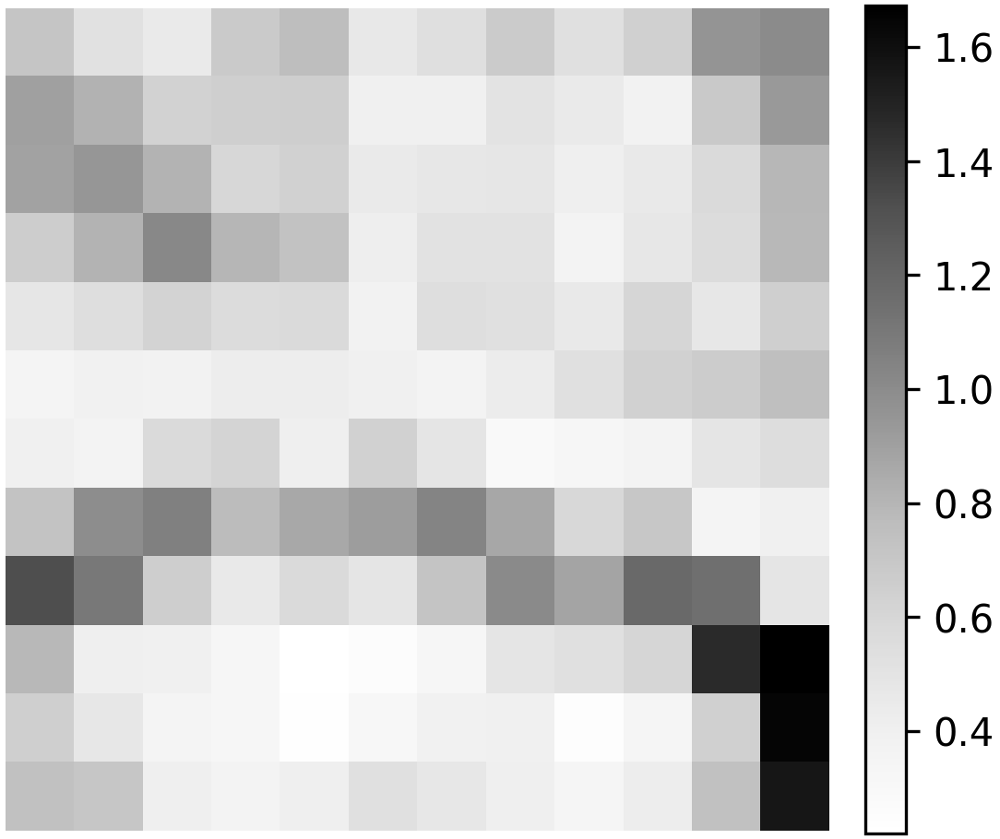
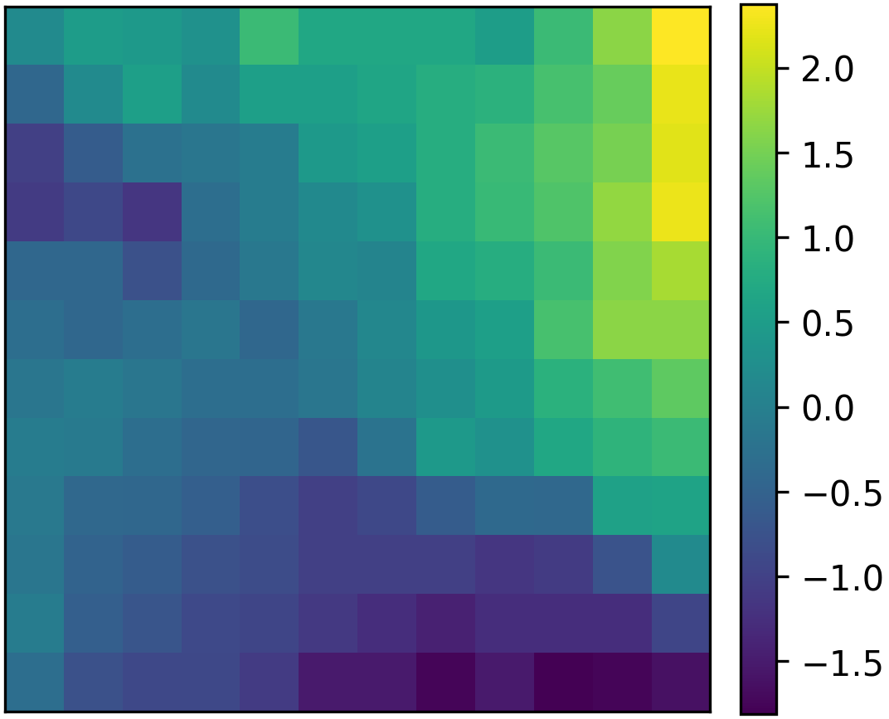
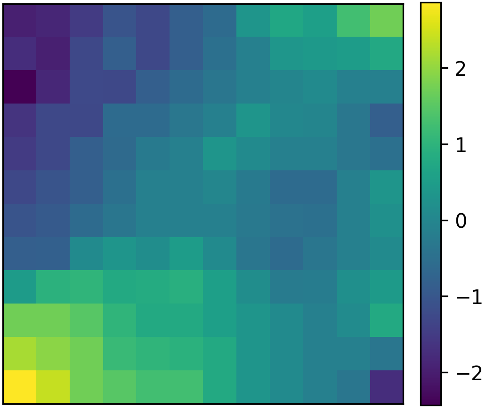
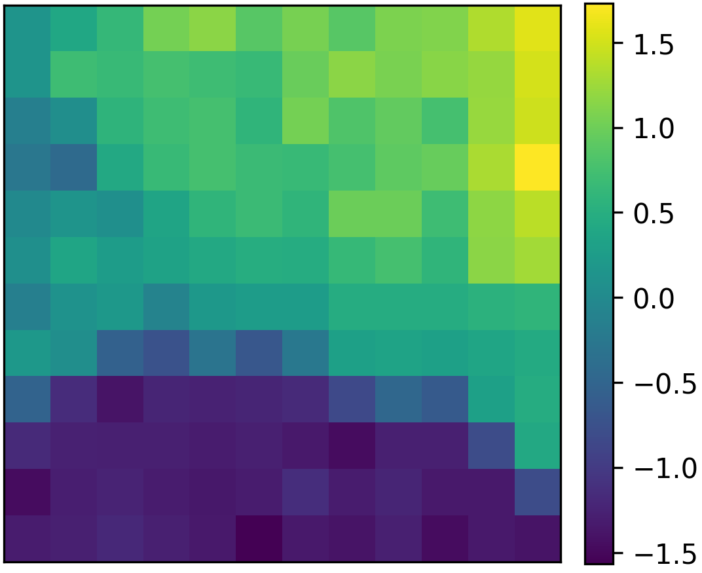
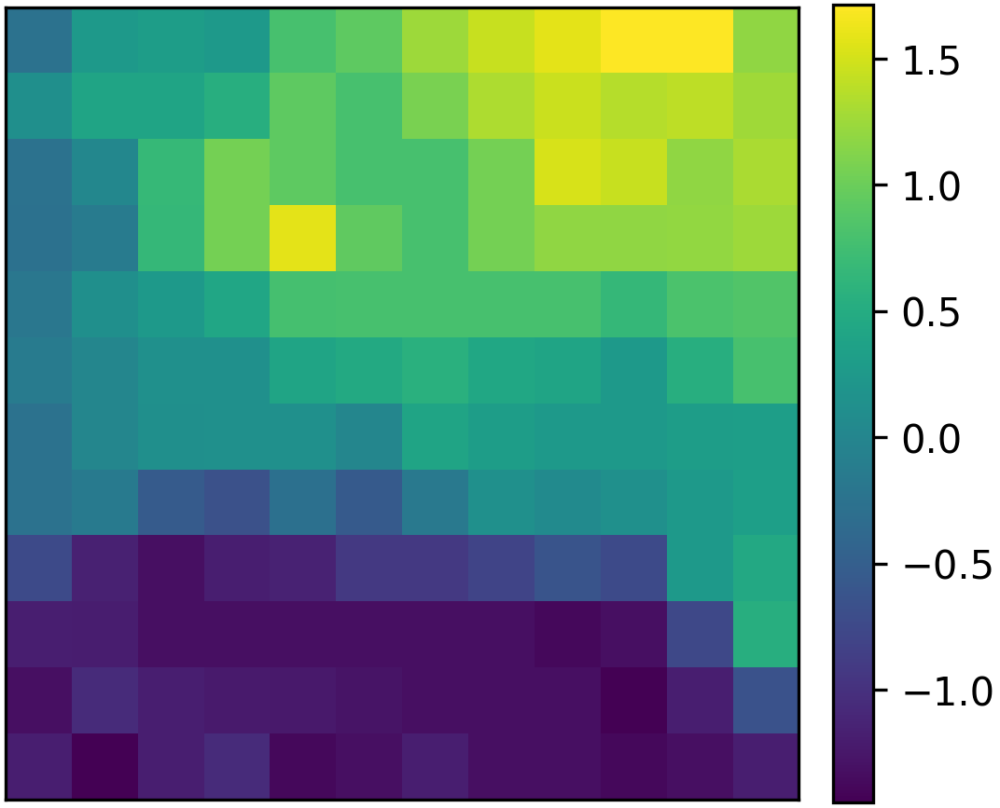

Machine-learning guide
Self-organising maps
This page accompanies the self-organising map material in the thesis and appendix. It provides an illustrative example of a self-organising map fitted to the Iris dataset, separate from the environmental analysis.
Iris example
The Iris dataset contains 150 flowers from three species. Each flower is represented by sepal length, sepal width, petal length and petal width. The example is tutorial material and was not part of the environmental analysis.
Unified distance matrix
The unified distance matrix, or U-matrix, describes differences between neighbouring codebook vectors. For each map unit k, the value is the average Euclidean distance between its codebook vector wk and those of its immediate lattice neighbours:
where is the set of neighbouring units. Small values indicate similar neighbouring codebook vectors. Bands of larger values indicate changes in the represented feature combinations and can suggest cluster boundaries. The U-matrix therefore helps identify possible groups within the map, although a separate clustering procedure is needed to assign discrete cluster labels.

Component planes
A component plane shows how a single feature varies across the trained map. Each unit k is coloured according to wkj, the value of feature j in the corresponding codebook vector.
A gradient from low to high values shows how the feature varies across the map. Similar patterns across component planes suggest that features vary together within the learnt representation, while opposing patterns suggest an inverse relationship. Comparing these patterns with the U-matrix helps identify the features that distinguish regions separated by larger codebook distances.
Component planes also provide a qualitative indication of feature importance for distinguishing regions of the map. Pronounced differences in feature values between regions suggest that the feature is relevant to the separation represented by the SOM.




Clustering the codebook vectors
The map itself provides an ordered representation rather than discrete labels. A clustering algorithm can be applied to the trained codebook vectors when a partition is required. The example below uses Ward hierarchical clustering.
Classification and regression
Observed class labels or continuous targets can be attached after unsupervised training. A new observation is mapped to its best-matching unit. Classification uses the label associated with the unit or its neighbourhood, while regression averages the target values of nearby mapped observations. These downstream uses rely on the neighbourhood organisation learned by the map.